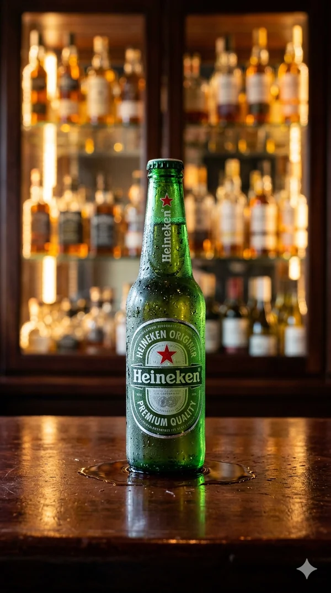
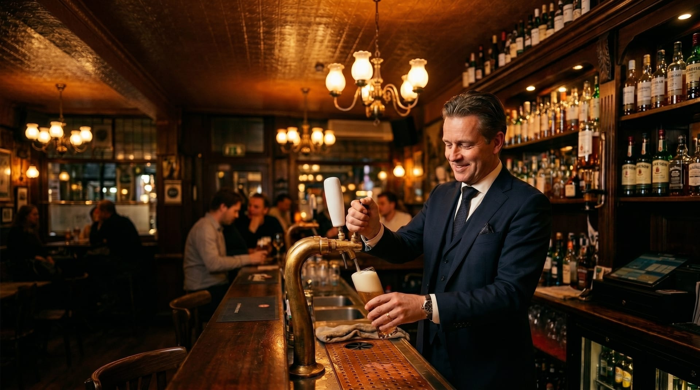
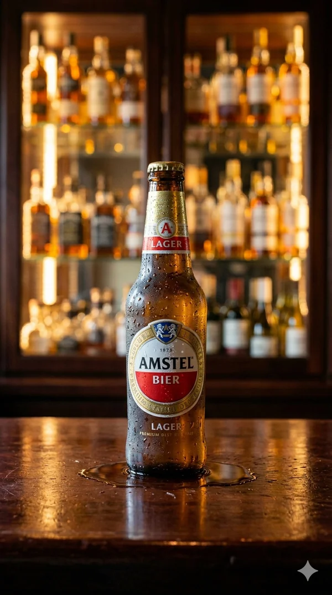
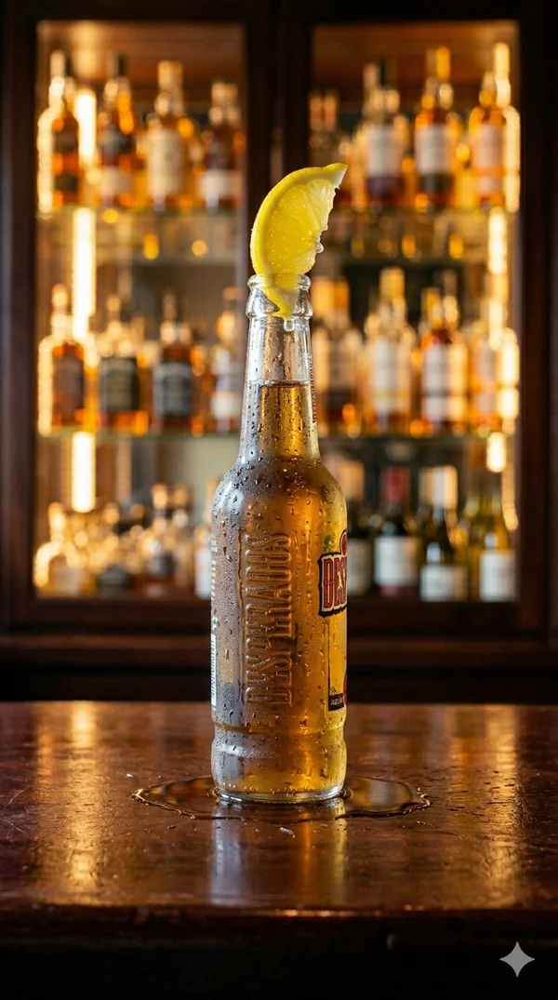
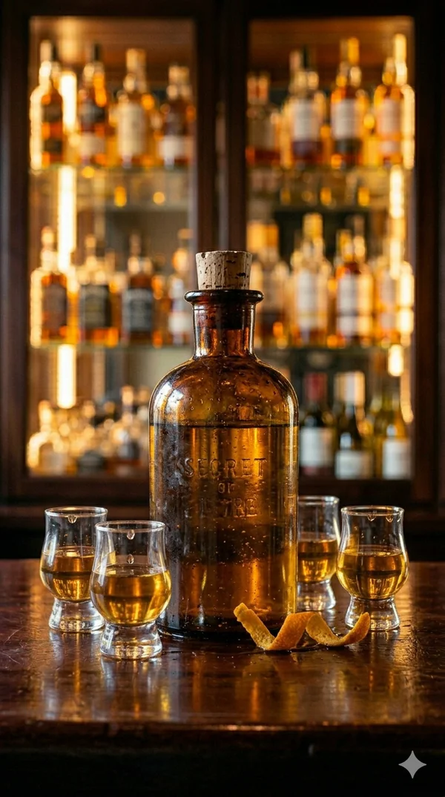
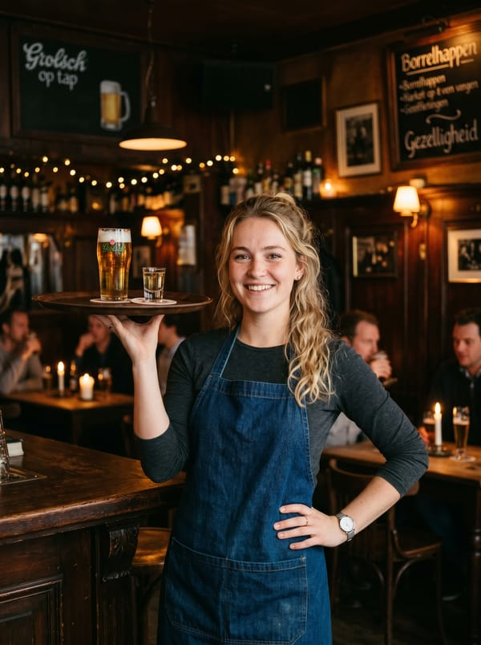
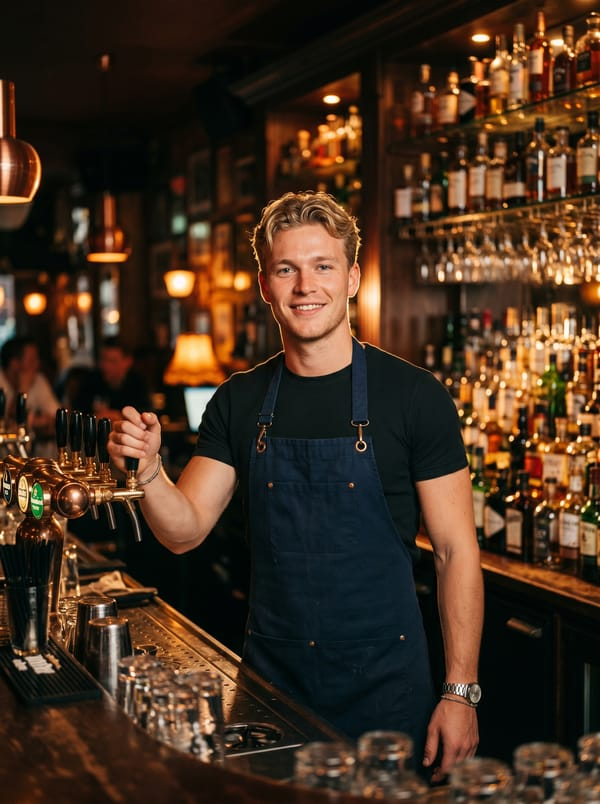
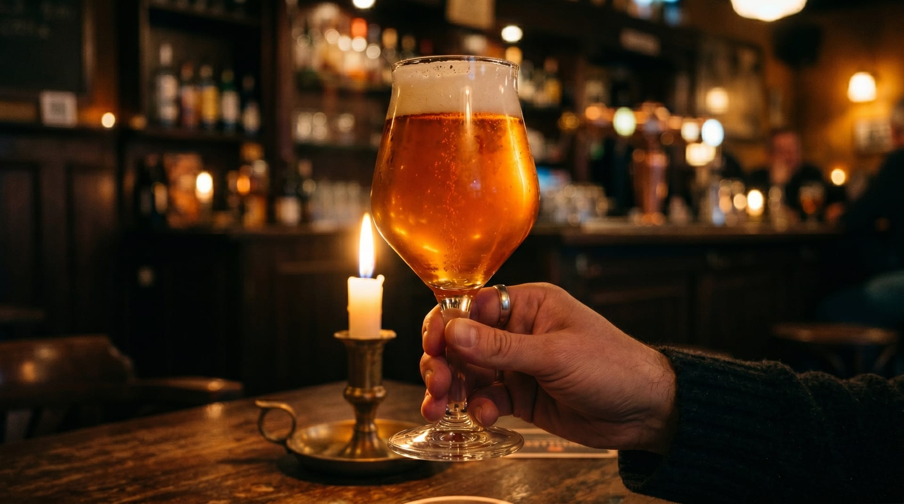

Pilsener
Heineken
De klassieker. Voor elke avond, elke gelegenheid.

Een schot in de roos
Koud, fris en altijd raak. Vier bieren die je wil drinken.

De klassieker. Voor elke avond, elke gelegenheid.

Zacht en verfrissend. Goed voor elk moment.

Een vleugje tequila. Voor wie durft.

De verrassing van de avond. Vraag de barman.
Shotje groeide op in Rijssen en kende elke kruk van elke kroeg die er ooit was. Op Enterstraat 5 maakte hij wat er miste: een bruincafé met donkere lambrisering, warme lichten en een toog lang genoeg voor iedereen. Geen ingewikkelde cocktailkaart. Gewoon koud bier, lekker eten en muziek die klopt.
Van Heineken tap tot huisspecialiteit Het Shotje. De avond loopt altijd langer dan gepland.
Hou je van een vol café, goed bier en echte gastvrijheid? We zoeken mensen.



Proef 5 bieren onder begeleiding van Shotje zelf. Verhalen, smaak en een goed glas. Voor €25 per persoon.
Enterstraat 5
7461 GJ Rijssen
| Maandag – donderdag | Binnenkort bekend |
| Vrijdag – zaterdag | Binnenkort bekend |
| Zondag | Binnenkort bekend |